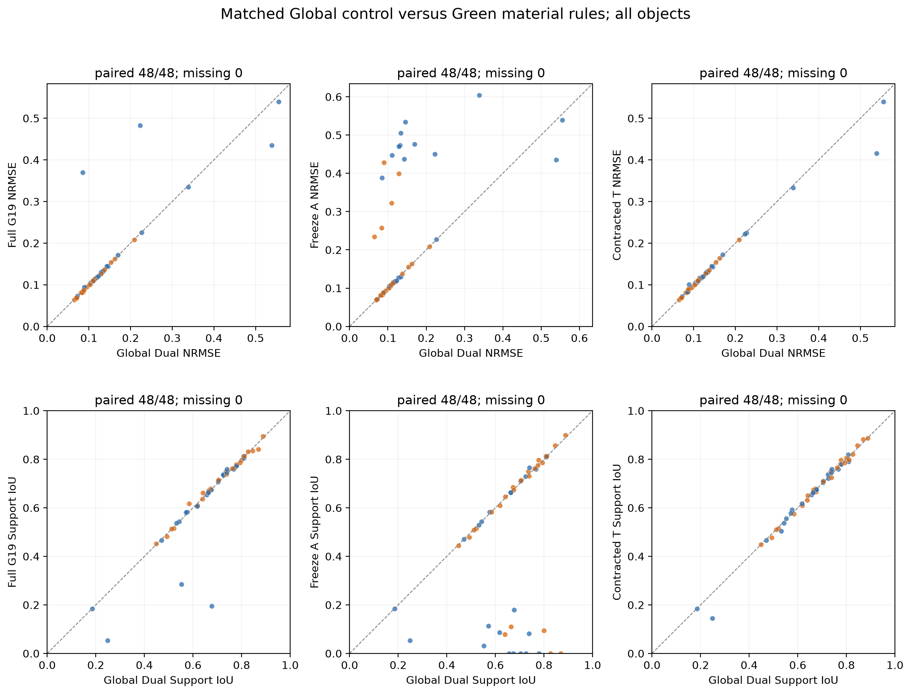
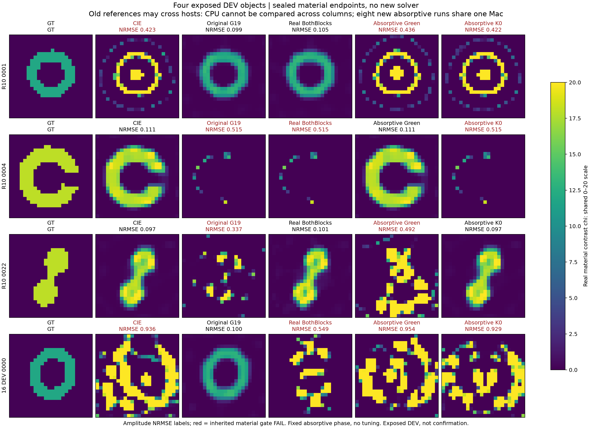
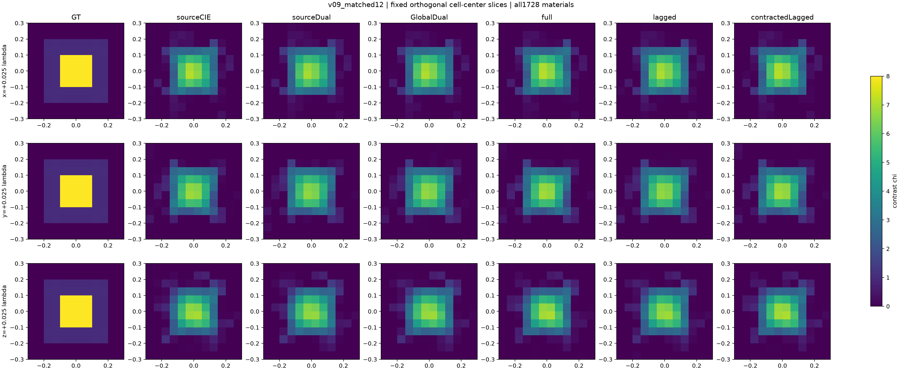

MAX-STRUCT / R11
Green分母改变了什么，
又该在哪个更新块修复？
研究执行中 · 48与16对象已评分，跨网格与三维继续
从完整导数纠正错误解释，再让新分母进入真实电流更新。保留环的正例，也保留开缝壳的失败；扩大独立高对比、混合材料与真正三维实验。
48对象扩大确认：局部修复成立，整体增量受限
288次反演全部完成、公共选择封存后评分。CIE / Dual / Global / G19 / freezeA / contractedT成功21 / 22 / 23 / 23 / 16 / 23例，Global与两个Green版本成功集合完全相同。contractedT修复新桥和梳状体的额外损伤，比原Green少用约5.5%有效运行CPU，但共同实际成本前缀下没有显示超越Dual的明确优势。
完整48对象结论 raw · 全48对象图集与成本曲线

所有对象全部保留；低于对角线的NRMSE点是改善，高于对角线是退化。不能只看平均误差或成功门槛。另16对象的正例与反例仍然保留
16个新材料、80次反演全部完成并在封存后评分。CIE / Dual-CIE / Global / 原Green材料分母 / 两块Green的材料成功分别为4 / 5 / 6 / 7 / 5。两块修正毁掉了一个原Green能恢复的新环，因此不升级为默认算法。
其中Global已解释原Green相对CIE三个成功增量中的两个；本组最清楚的分母专有效果是新环。原Green实际CPU约CIE的1.27倍；两块修正更贵；CIE+Both与付费CIE+Dual均5/16，相比单CIE的4/16多1例，但都支付两个候选成本。48对象结果已完整交付，真正三维和配对网格实验继续。
完整16对象结果、全部失败与成本
 全部high对象；GT仅在全部80预测和公开选择封存后评分。
全部high对象；GT仅在全部80预测和公开选择封存后评分。 全部mixed对象；统一0–20contrast色标，保留细结构共同失败。
全部mixed对象；统一0–20contrast色标，保留细结构共同失败。正在执行的独立扩大
上表是已冻结并提交执行的任务规模，不是完成数。48与16对象均已评分；三维12³、三分量dyadic、60外部偶极照明，cross18→12的两观测不增加独立材料数。CPU、wall和物理LU分别记账；数据拟合不代替材料恢复。
主48队列在132次完成后发生控制程序故障，四个在途attempt中断，三次准备失败，均保留后恢复。受影响对象完整CPU部分未知，不将重试费用冒充端到端同成本；最终另报47对象成本敏感性。
另有8个新材料的配对网格补充：matched24与cross48→24，共64次四臂逆解，仍仅8个独立材料。64次逆解已接续主288释放的资源，尚无完整评分。配对网格合同。
路径在物理校正之前已经分开
 桥在辅助stage2/3已经改善；同一个corrector随后延续不同的材料路径。不同硬件的DEV CPU没有混成算法加速证据。
桥在辅助stage2/3已经改善；同一个corrector随后延续不同的材料路径。不同硬件的DEV CPU没有混成算法加速证据。
吸收型分母没有成为通用修复
利用耗散Green符号可证明完整Green下的current增益上界，但固定相位的新8次开发反演并未扩大恢复范围：Green版只恢复壳，K0版只恢复桥，均丢掉原环收益。保持完整负结果，不扫描更多复移位。

全部是公开开发对象；跨host旧参照CPU不横比，8个新吸收型运行同一Mac且全部先封存后评分。真正三维已完成12个开发反演
1728个独立实材料未知量、每源5184个复current分量、60外部偶极照明。Green轻微改善v04幅度误差却降低IoU；v09所有方法仍模糊高介电核心。所有臂用完320个corrector接受步，不称收敛或三维优势。新的8对象/50次matched与cross-grid确认继续。

v09开发共同难例；相近低数据残差仍伴随高核心衰减，完整表同时报告幅度NRMSE与相对contrast误差。